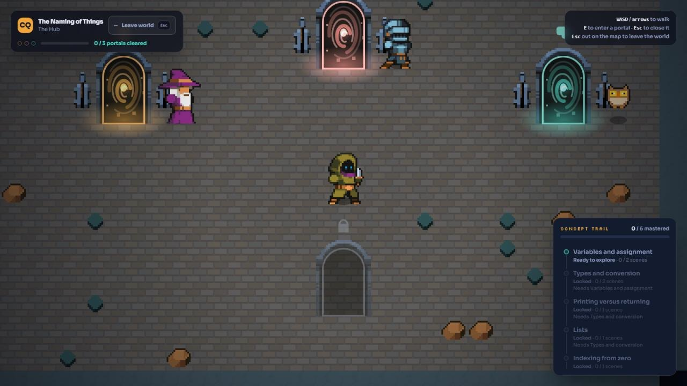
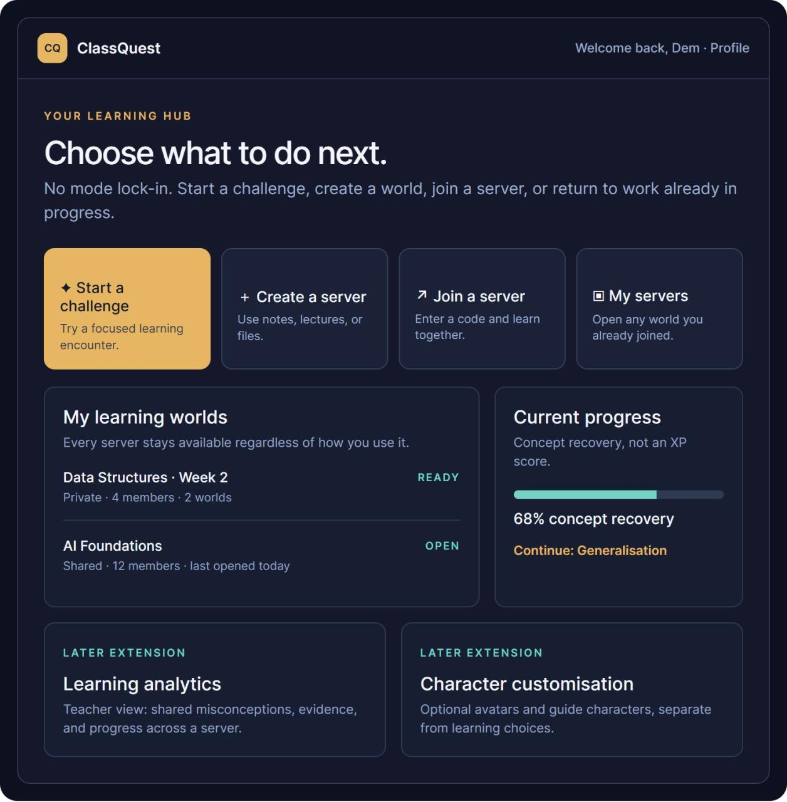
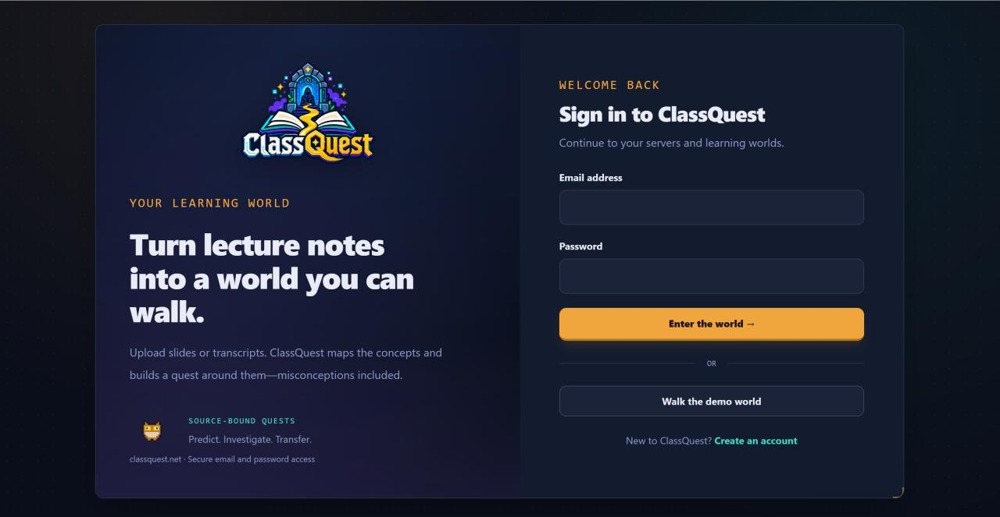

Selected work ClassQuest
02 / Collaborative delivery / Hackathon
ClassQuest
Turning lecture material into playable quests in three days — with a contribution trail from the learning loop to upload security.
Built by a five-person team at Code Network’s Winter Hackathon, 21–23 August 2026. ClassQuest received the People’s Choice Award after audience voting across 15 teams.
Ten merged pull requests cover my work on the playable demo, frontend foundation, upload security, cohort learning and preferences. Miguel Pineda led the technical build; the award belongs to the team.
Three-day hackathon build; team refinement continued afterwards
The project and my contribution
ClassQuest turns course material into playable challenges: make a prediction, diagnose the result, check source evidence, then apply the idea or try again. Learners join a cohort server and receive readiness feedback based on the group’s answers. We built it with React, TypeScript, FastAPI, Python and SQLite.
Miguel Pineda led the technical build for our five-person team. My work covered the playable demo, frontend foundation, upload security and cohort features, and I presented during the judging Q&A. The team received the People’s Choice Award following audience voting across 15 teams.
I was a Code Network Event Officer while competing in its hackathon. The executive cleared this before the event.
My work across ten merged pull requests
The playable learning loop
I built the prediction → diagnosis → source evidence → transfer-or-retry cycle, answer choices and concept trail. I added an overfitting fixture and updated the backend test expectations to match.
Frontend foundation and the visual system
I connected sign-in and registration to the existing API, restored returning sessions, and built onboarding and server create/join flows with loading states and error recovery. I applied the team’s visual system across those screens and the demo.



Upload security and regression tests
I separated client-supplied filenames from server storage names, bounded the application read and added regression tests for path-like names and size limits. Follow the decision and inspect the evidence below ↓
Cohort learning and preferences
I added an asynchronous practice challenge and readiness feedback based on shared answer patterns. When the answer data is sparse or tied, the application uses a fallback rather than presenting a confident readiness judgement. Local learning preferences are validated and still work when storage is blocked.
Iteration and debugging
I revised the starting experience to remove forced learning modes, fixed a dependent hub card exposed by a failed typecheck, and added universal dashboard actions.
PR #12
Merged 22 Aug 2026
A filename is a label.
Should it choose a path?
I changed the upload handler so the server chooses where a file is stored, while keeping its original name for display. I also bounded the application read and added regression tests. The useful part is the boundary: a familiar label should not decide where bytes get written.
My patch, within a five-person team’s build. Miguel Pineda led the technical work; the People’s Choice Award belongs to the team.
01 / Before
One name.
Two jobs.
doc_dir / filenameThe label also chose the name on diskThe original handler joined the supplied filename to the upload directory. A path-like name could steer that join outside the intended folder. It also read the entire file before checking its size.
data = f.file.read()
path = doc_dir / filenameNon-adjacent lines; read them in context ↗.
02 / The change
Keep the label.
Choose the path.
doc_dir / document_idThe server generates the IDThe generated document ID becomes the storage name; the original filename stays in the database as display metadata. Inspect the storage change ↗
Why read one extra byte?
It is enough to tell whether the file is too large. The helper asks for at most limit + 1 bytes, then returns HTTP 413 (“too large”) if it got more than the limit. A file exactly at the limit still works.
data = file.file.read(max_bytes + 1)
if len(data) > max_bytes:
raise HTTPException(…)Excerpt; exception arguments shortened. Read the full helper ↗
03 / What backs it
A change you can
check for yourself.
Three added test functions cover four cases. The filename test runs twice; each case also checks the original label and stored bytes are preserved.
- A relative path as a filename
../outside.txtstays metadata. The stored file remains inside the server’s upload directory. - An absolute path as a filename
/tmp/outside.txtalso cannot choose the storage destination. - Read just enough to reject
With 9 bytes available and a 5-byte limit, the read requests 6 bytes and returns HTTP 413.
- Accept the boundary
Five bytes at a 5-byte limit are accepted. The limit does not reject a file that fits.
Read the four cases in the merged patch ↗
These notes explain the published tests; this page does not run them. The PR records the checks run for the patch. The existing mixed file-and-pasted-text test was retained.
Three problems found during the build
- A failed typecheck left a broken card in the hub. An upstream change invalidated a dependent component, and we moved past the type error under time pressure. Testing exposed the broken card later.
- The first onboarding forced a learning mode on people. The team already understood the modes, which made the forced choice seem clearer to us than it was to new users. We removed that step.
- The upload handler was insecure in its first version. It used client-supplied filenames for storage and read each whole file before checking its size. I separated the storage name from the label, bounded that read and added regression tests.
What I would do earlier
- Start with safe upload defaults. Server-generated identifiers and bounded reads should have been in the first version rather than the patch.
- Test onboarding with someone outside the team on day one. Someone who had not been part of the planning conversation could have challenged our assumptions about the starting experience much earlier.
- Finish the security baseline earlier. Writing down what is unhardened is most useful while there is still time to harden some of it, not at the end as documentation.
Pull requests and repository
These pull requests document my contributions during the hackathon. The team continued refining the application afterwards.
- Playable learning demo, overfitting fixture, backend test updatesPR #5
- Frontend foundation, sign-in, sessions, onboarding, server flowsPR #11
- Upload security patch, traversal and size-limit tests, security baselinePR #12
- Visual system applied across screensPR #14
- Asynchronous cohort practice challengePR #20
- Readiness feedback with sparse-evidence safeguardsPR #21
- Validated learning preferences with storage fallbacksPR #23
- Role and learning-mode starting path, later revisedPR #24
- Forced learning modes and the obsolete dependent card removedPR #25
- Universal dashboard actionsPR #26
- All of my pull requests on the repositoryFiltered view
- Team repositoryMikePineda/class-quest